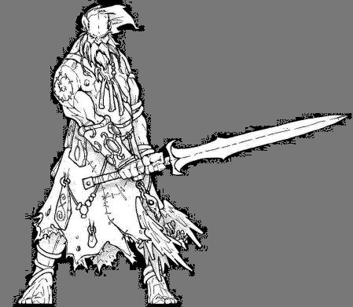

Forums galactiques > Marché galactique : discussions commerciales > Enchère
Pages : 1
| Barry Renommée de marchand : 53  16/06 ETU 14:05 | Score : 0 Détails 200 Chasseurs bombardiers mit aux enchères.
Mise à prix: 500 000 leems. Règle: Ne pas sous-enchérir. Et, j'assure le transport. | ||
| ROBOT X Renommée de marchand : 0 16/06 ETU 14:54 | Score : 0 Détails C OK JE VEUX BIEN CONTRE 500 000
| ||
| KELTOX Renommée de marchand : 0  17/06 ETU 10:41 | Score : 0 Détails JE TE PROPOSE DE DENNEZ 100 CHASSEUR A MOI ET 100 A ROBOT X COMME SA ON PAIRA TOUS LES DEUX 250 000 SE QUI FERA 500 000 / MERCI
| ||
| Sandalphon Renommée de marchand : 592  17/06 ETU 16:33 | Score : 0 Détails HRP//: Dites les gars vous auriez pas créé une coalition des "mecs qui écrivent en gros et qui font des fautes et dont le nom se finit par X" ? En tout cas vous vous ressemblez drôlement.
Vraiment désolé Barry pour le hors-sujet, mais ça me démangeait trop. //HRP | ||
| ROBOT X Renommée de marchand : 0 18/06 ETU 18:29 | Score : 0 Détails ecoute on na brege et on na pa cree de coa !!! ok sandalphon !!! je le conner meme pâ se keltox d accord !!!
| ||
| Mordos Baughlir Renommée de marchand : 17  18/06 ETU 19:48 | Score : 0 Détails Justement, ici, on abrège pas... Cela est mauvais pour les yeux, et pour le teint, alors, par pitié, retournez en CP pour apprendre les bases de vos lettres.
J'en propose 500001 leems ! | ||
| Edhel Renommée de marchand : 25  18/06 ETU 19:55 | Score : 0 Détails J'achète les 200 chasseurs B. pour 500 005 ££ ... et félicitations pour cette belle intervention, robot x, très claire, très bien construite... hum hum
Au fait, la fin des enchères, c'est pour quand ? | ||
| Lokki Renommée de marchand : 281  18/06 ETU 20:11 | Score : 0 Détails Merci d'avoir mis en avant (de manière fort stupide au passage) le fait que vous (Robot X et Machinx) avez un double-compte. J'écris tout de suite à Dieu pour le signaler.
Parce-que deux comptes, deux boulets c'est quand même fâcheux... | ||
| KELTOX Renommée de marchand : 0 19/06 ETU 19:19 | Score : 0 Détails un double cpmpte : tu est fou je ne frai jamais sa car c de la triche : et je ne suis pa 1 tricheur et pis robot x je les deja demoli avec mes fregates
| ||
| Capitaine Kortzanov Renommée de marchand : 196  19/06 ETU 19:36 | Score : 0 Détails HRP ///Alors pourquoi, encore une fois n'y a t'il qu'une minute d'intervalles entre la connexion de Robot X et vous commandant? C'est la troisième fois que vos connexions se suivent à une minute près. Une fois, je veux bien. Deux fois, c'est louche. Mais trois fois, il n'y a plus de doutes! /// HRP
| ||
| Sandalphon Renommée de marchand : 592 19/06 ETU 19:37 | Score : 0 Détails Ne vous inquiètez pas capitaine, l'affaire est déjà entendue par Dieu en ce moment même...
| ||
| BROLI Renommée de marchand : 0  20/06 ETU 19:17 | Score : 0 Détails c est qui se bouffon qui a fais se double-compte vraiment debile se gars
j offre mes 200 diam et 200 000 d energie sa te va barry | ||
| Sandalphon Renommée de marchand : 592 20/06 ETU 19:21 | Score : 0 Détails Ne vous moquez pas de lui très cher car vous lui ressemblez étrangement. Notamment au niveau du nom en majuscules, des fautes et de la description.
Lokki ! Il revient ! | ||
| Capitaine Kortzanov Renommée de marchand : 196 20/06 ETU 19:42 | Score : 0 Détails Et en plus il a pris l'avatar du commandant Sigma, c'est quand même vraiment facheux de voir tout ça, si ca se trouve c'est le même que celui qui a pris l'avatar et le nom de Valorys!
| ||
| Sandalphon Renommée de marchand : 592 20/06 ETU 19:44 | Score : 0 Détails Je ne pense pas, l'autre savait écrire. Enfin si il change d'avatar, il n'y a pas de raison de s'acharner sur lui finalement, mais qu'il se moque de lui-même, c'est un comble !
(Désolé à nouveau Barry de polluer un peu cette vente..) | ||
| Lokki Renommée de marchand : 281 20/06 ETU 19:57 | Score : 0 Détails Ben oui c'est bien Môssieur X qui récidive...
T'es franchement pas malin mon vieux, ton identité est tout de suite grillée...mais je vais pas te dire pourquoi, ça te rendrait plus difficile à détecter les prochaines fois (et j'espère qu'il y'en aura pas!). En plus, le meurtrier revient toujours sur les lieux de son crime, c'est pas ce qu'on dit d'habitude? | ||
| BROLI Renommée de marchand : 0 21/06 ETU 17:19 | Score : 0 Détails c t mon frere qui avait 1 compte et moi sur le meme ordi
| ||
| Sandalphon Renommée de marchand : 592 21/06 ETU 17:23 | Score : 0 Détails Comme on dit chez toi : LOL !
| ||
| A Renommée de marchand : 176  21/06 ETU 17:40 | Score : 0 Détails Décidement, le nombre des boulets dans la galaxie est énorme ...
Afin qu' un tel armement ne tombe pas entre les mains d' un Commandant "kévinesque" qui en ferait une utilisation aussi désastreuse que le franc parler utilisé pour les acheter, le Monde A propose 1 000 000 de leems. XD |
Pages : 1
Forums galactiques > Marché galactique : discussions commerciales > Enchère